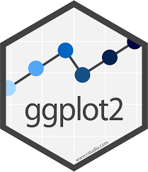
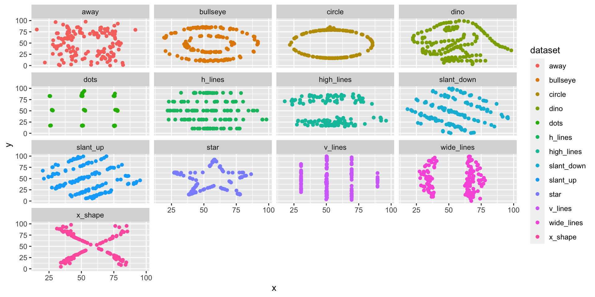
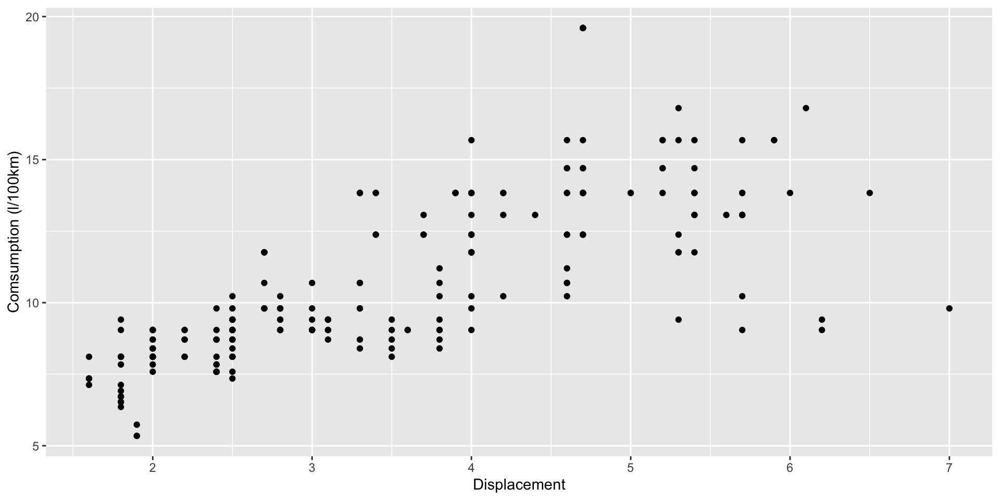
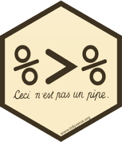
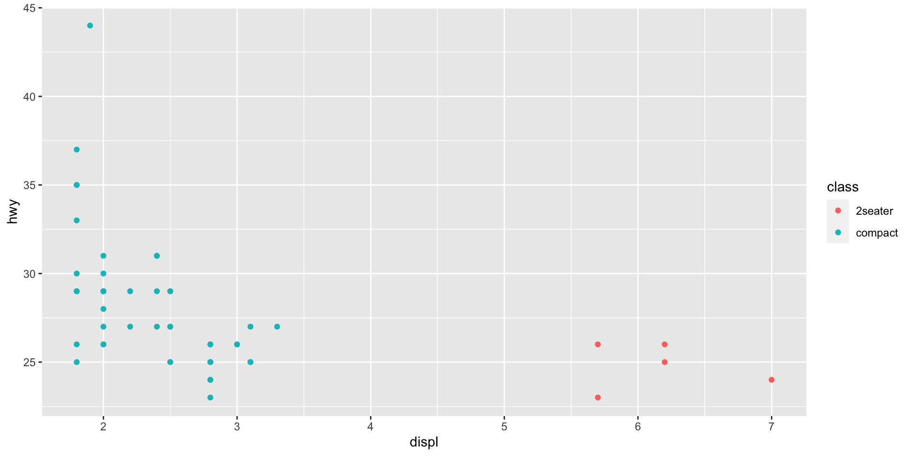
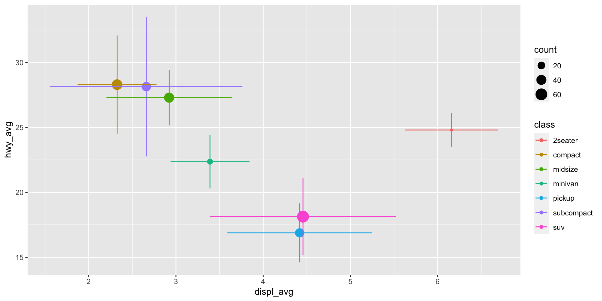
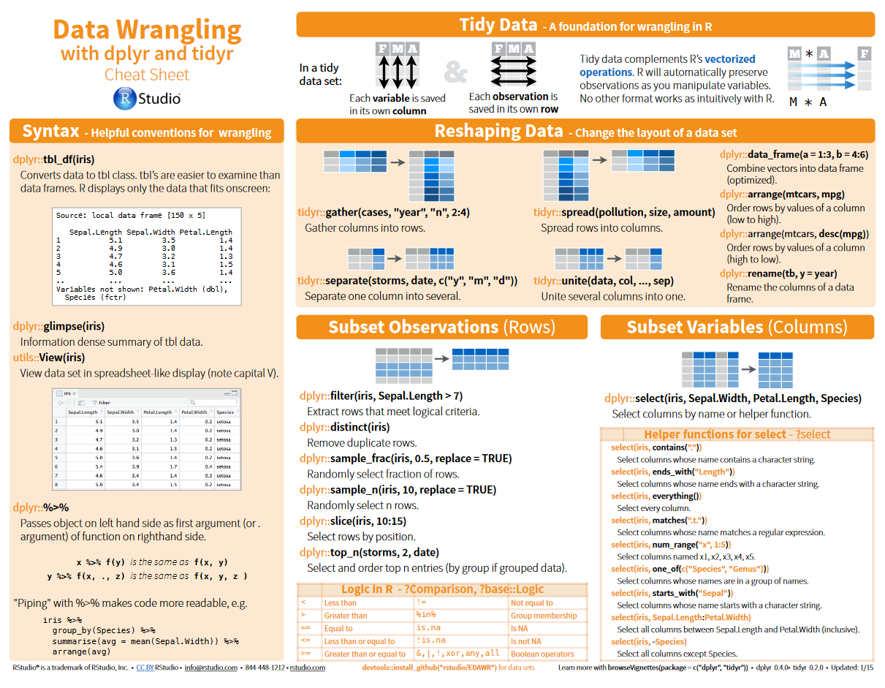
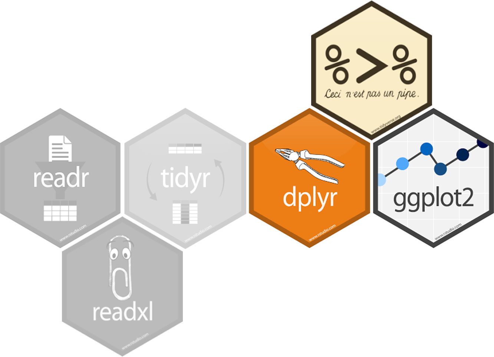
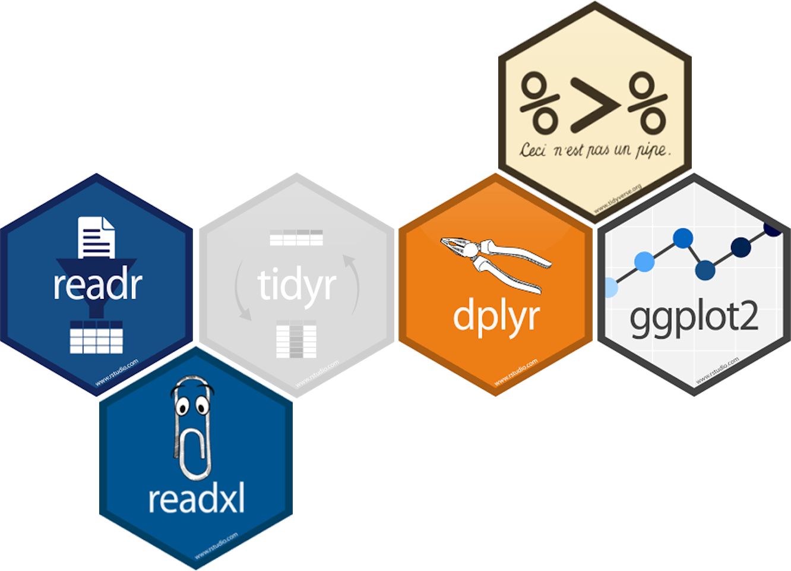

Data Wrangling
Data management and analysis in environmental sciences
Jesse Radolinski, Johannes Ingrisch
Department of Ecology, University of Innsbruck
Last Week: Visualisation
The Big Mess
The Solution?
The Solution
On Today’s Plate
The art of getting data into a useful form for visualisation and modelling.
Transforming data using dplyr
A lot of useful functions are provided by the package dplyr.

- create subsets of data
- create new variables
- rename variables
- reorder observations
- …
Filter rows with filter()
Create a subset of observations based on values.
Use logical operators.
# A tibble: 5 × 11
manufacturer model displ year cyl trans drv cty hwy fl class
<chr> <chr> <dbl> <int> <int> <chr> <chr> <int> <int> <chr> <chr>
1 chevrolet corvette 5.7 1999 8 manual(… r 16 26 p 2sea…
2 chevrolet corvette 5.7 1999 8 auto(l4) r 15 23 p 2sea…
3 chevrolet corvette 6.2 2008 8 manual(… r 16 26 p 2sea…
4 chevrolet corvette 6.2 2008 8 auto(s6) r 15 25 p 2sea…
5 chevrolet corvette 7 2008 8 manual(… r 15 24 p 2sea…Filter rows with filter()
Use multiple conditions.
Comparisons
>, >=, <, <=, ==, !=
# A tibble: 26 × 11
manufacturer model displ year cyl trans drv cty hwy fl class
<chr> <chr> <dbl> <int> <int> <chr> <chr> <int> <int> <chr> <chr>
1 audi a4 2 2008 4 manual(m… f 20 31 p comp…
2 audi a4 2 2008 4 auto(av) f 21 30 p comp…
3 chevrolet malibu 2.4 2008 4 auto(l4) f 22 30 r mids…
4 honda civic 1.6 1999 4 manual(m… f 28 33 r subc…
5 honda civic 1.6 1999 4 auto(l4) f 24 32 r subc…
6 honda civic 1.6 1999 4 manual(m… f 25 32 r subc…
7 honda civic 1.6 1999 4 auto(l4) f 24 32 r subc…
8 honda civic 1.8 2008 4 manual(m… f 26 34 r subc…
9 honda civic 1.8 2008 4 auto(l5) f 25 36 r subc…
10 honda civic 1.8 2008 4 auto(l5) f 24 36 c subc…
# … with 16 more rowsTake care:
= instead of == produces error. Happens to me all the time…
Logical operators

Logical operators
%in% can simplify life.
Combining multiple conditions can quickly become confusing. Consider doing it stepwise.
Logical operators
Sometimes it is easier to define what should stay out, instead of what should stay in.
Example: exclude all SUVs from manufacturer Chevrolet
Arrange rows: arrange()
# A tibble: 234 × 11
manufacturer model displ year cyl trans drv cty hwy fl class
<chr> <chr> <dbl> <int> <int> <chr> <chr> <int> <int> <chr> <chr>
1 dodge dakota pi… 4.7 2008 8 auto… 4 9 12 e pick…
2 dodge durango 4… 4.7 2008 8 auto… 4 9 12 e suv
3 dodge ram 1500 … 4.7 2008 8 auto… 4 9 12 e pick…
4 dodge ram 1500 … 4.7 2008 8 manu… 4 9 12 e pick…
5 jeep grand che… 4.7 2008 8 auto… 4 9 12 e suv
6 chevrolet k1500 tah… 5.3 2008 8 auto… 4 11 14 e suv
7 jeep grand che… 6.1 2008 8 auto… 4 11 14 p suv
8 chevrolet c1500 sub… 5.3 2008 8 auto… r 11 15 e suv
9 chevrolet k1500 tah… 5.7 1999 8 auto… 4 11 15 r suv
10 dodge dakota pi… 5.2 1999 8 auto… 4 11 15 r pick…
# … with 224 more rowsArrange rows: arrange()
# A tibble: 234 × 11
manufacturer model displ year cyl trans drv cty hwy fl class
<chr> <chr> <dbl> <int> <int> <chr> <chr> <int> <int> <chr> <chr>
1 volkswagen jetta 1.9 1999 4 manu… f 33 44 d comp…
2 volkswagen new beetle 1.9 1999 4 manu… f 35 44 d subc…
3 volkswagen new beetle 1.9 1999 4 auto… f 29 41 d subc…
4 toyota corolla 1.8 2008 4 manu… f 28 37 r comp…
5 honda civic 1.8 2008 4 auto… f 25 36 r subc…
6 honda civic 1.8 2008 4 auto… f 24 36 c subc…
7 toyota corolla 1.8 1999 4 manu… f 26 35 r comp…
8 toyota corolla 1.8 2008 4 auto… f 26 35 r comp…
9 honda civic 1.8 2008 4 manu… f 26 34 r subc…
10 honda civic 1.6 1999 4 manu… f 28 33 r subc…
# … with 224 more rowsarrange(): multiple columns
# A tibble: 234 × 11
manufacturer model displ year cyl trans drv cty hwy fl class
<chr> <chr> <dbl> <int> <int> <chr> <chr> <int> <int> <chr> <chr>
1 dodge dakota pi… 4.7 2008 8 auto… 4 9 12 e pick…
2 dodge durango 4… 4.7 2008 8 auto… 4 9 12 e suv
3 dodge ram 1500 … 4.7 2008 8 auto… 4 9 12 e pick…
4 dodge ram 1500 … 4.7 2008 8 manu… 4 9 12 e pick…
5 jeep grand che… 4.7 2008 8 auto… 4 9 12 e suv
6 chevrolet k1500 tah… 5.3 2008 8 auto… 4 11 14 e suv
7 jeep grand che… 6.1 2008 8 auto… 4 11 14 p suv
8 chevrolet c1500 sub… 5.3 2008 8 auto… r 11 15 e suv
9 chevrolet k1500 tah… 5.7 1999 8 auto… 4 11 15 r suv
10 dodge dakota pi… 5.2 1999 8 auto… 4 11 15 r pick…
# … with 224 more rowsSelect columns: select()
Select columns: select()
# A tibble: 234 × 5
year cyl trans drv cty
<int> <int> <chr> <chr> <int>
1 1999 4 auto(l5) f 18
2 1999 4 manual(m5) f 21
3 2008 4 manual(m6) f 20
4 2008 4 auto(av) f 21
5 1999 6 auto(l5) f 16
6 1999 6 manual(m5) f 18
7 2008 6 auto(av) f 18
8 1999 4 manual(m5) 4 18
9 1999 4 auto(l5) 4 16
10 2008 4 manual(m6) 4 20
# … with 224 more rowsSelect columns: select()
Drop Columns ::: {.cell}
# A tibble: 234 × 9
manufacturer displ year trans drv cty hwy fl class
<chr> <dbl> <int> <chr> <chr> <int> <int> <chr> <chr>
1 audi 1.8 1999 auto(l5) f 18 29 p compact
2 audi 1.8 1999 manual(m5) f 21 29 p compact
3 audi 2 2008 manual(m6) f 20 31 p compact
4 audi 2 2008 auto(av) f 21 30 p compact
5 audi 2.8 1999 auto(l5) f 16 26 p compact
6 audi 2.8 1999 manual(m5) f 18 26 p compact
7 audi 3.1 2008 auto(av) f 18 27 p compact
8 audi 1.8 1999 manual(m5) 4 18 26 p compact
9 audi 1.8 1999 auto(l5) 4 16 25 p compact
10 audi 2 2008 manual(m6) 4 20 28 p compact
# … with 224 more rows:::
select(): helper functions
- reorder the columns ::: {.cell}
:::
- rename columns ::: {.cell}
:::
- various other options: see
?select
Add new variables: mutate()
mutate() adds a new column at the end of your dataset.
Example: Calculate fuel consumption (L / 100km) = 1 / hwy /2.352 * 100
# A tibble: 6 × 12
manufact…¹ model displ year cyl trans drv cty hwy fl class consump
<chr> <chr> <dbl> <int> <int> <chr> <chr> <int> <int> <chr> <chr> <dbl>
1 audi a4 1.8 1999 4 auto… f 18 29 p comp… 8.11
2 audi a4 1.8 1999 4 manu… f 21 29 p comp… 8.11
3 audi a4 2 2008 4 manu… f 20 31 p comp… 7.59
4 audi a4 2 2008 4 auto… f 21 30 p comp… 7.84
5 audi a4 2.8 1999 6 auto… f 16 26 p comp… 9.05
6 audi a4 2.8 1999 6 manu… f 18 26 p comp… 9.05
# … with abbreviated variable name ¹manufacturerAdd new variables: mutate()
Alternative: Stepwise
mpg2 <- mutate(mpg, consump = 1 / hwy * 2.352 * 100)
# alternative: stepwise
mpg2 <- mutate(mpg,
consump = 1 / hwy, # gallons per mile
consump = consump * 2.352 * 100) # L/100km
head(mpg2)# A tibble: 6 × 12
manufact…¹ model displ year cyl trans drv cty hwy fl class consump
<chr> <chr> <dbl> <int> <int> <chr> <chr> <int> <int> <chr> <chr> <dbl>
1 audi a4 1.8 1999 4 auto… f 18 29 p comp… 8.11
2 audi a4 1.8 1999 4 manu… f 21 29 p comp… 8.11
3 audi a4 2 2008 4 manu… f 20 31 p comp… 7.59
4 audi a4 2 2008 4 auto… f 21 30 p comp… 7.84
5 audi a4 2.8 1999 6 auto… f 16 26 p comp… 9.05
6 audi a4 2.8 1999 6 manu… f 18 26 p comp… 9.05
# … with abbreviated variable name ¹manufacturerAdd new variables: mutate()
The Pipe: %>%
R-Studio Shortcut: Ctrl + Shift + M
The Pipe: %>%
Passes object on the lefthand side as first argument of function on righthand side.
x %>% f(y)is similar tof(x,y)
Combine Multiple Operations: %>%
x %>% f(y)is similar tof(x,y)
mpg_sub <- mpg %>%
filter(class == "2seater" | class == "compact") %>%
select(class, manufacturer, cyl, displ, hwy) %>%
mutate(consump = 1/hwy) %>%
arrange(hwy)
head(mpg_sub)# A tibble: 6 × 6
class manufacturer cyl displ hwy consump
<chr> <chr> <int> <dbl> <int> <dbl>
1 2seater chevrolet 8 5.7 23 0.0435
2 compact volkswagen 6 2.8 23 0.0435
3 2seater chevrolet 8 7 24 0.0417
4 compact volkswagen 6 2.8 24 0.0417
5 compact volkswagen 6 2.8 24 0.0417
6 compact audi 4 1.8 25 0.04 Combine Pipe with ggplot()
Hands on: Exercise Part 1
Part 2
Summarize data: summarise()
Collapses data frame to a single row –>
summarise()
Also possible for multiple functions and variables
Summarize different groups: group_by() & summarise()
Question: What is the average hwy for each car-class?
# A tibble: 7 × 2
class hwy_avg
<chr> <dbl>
1 2seater 24.8
2 compact 28.3
3 midsize 27.3
4 minivan 22.4
5 pickup 16.9
6 subcompact 28.1
7 suv 18.1- we can summarise values for all kind of groups!
Group_by() with several grouping variables
# A tibble: 12 × 3
# Groups: class [7]
class drv avg_hwy
<chr> <chr> <dbl>
1 2seater r 24.8
2 compact 4 25.8
3 compact f 29.1
4 midsize 4 24
5 midsize f 27.6
6 minivan f 22.4
7 pickup 4 16.9
8 subcompact 4 26
9 subcompact f 30.5
10 subcompact r 23.2
11 suv 4 18.3
12 suv r 17.5- Important: before we can group this dataset again we need to ungroup() first!
Advanced Example: Group_by() & summarise()
by_class <- mpg %>%
group_by(class) %>%
summarise(hwy_avg = mean(hwy),
hwy_sd = sd(hwy),
displ_avg = mean(displ),
displ_sd = sd(displ),
count = n())
by_class# A tibble: 7 × 6
class hwy_avg hwy_sd displ_avg displ_sd count
<chr> <dbl> <dbl> <dbl> <dbl> <int>
1 2seater 24.8 1.30 6.16 0.532 5
2 compact 28.3 3.78 2.33 0.452 47
3 midsize 27.3 2.14 2.92 0.719 41
4 minivan 22.4 2.06 3.39 0.453 11
5 pickup 16.9 2.27 4.42 0.829 33
6 subcompact 28.1 5.38 2.66 1.10 35
7 suv 18.1 2.98 4.46 1.07 62Advanced Example: Group_by() & summarise() & ggplot()
Group_by() & mutate()
Calculations on group level without collapsing the dataset.
# A tibble: 234 × 5
# Groups: class [7]
class manufacturer model hwy avg_hwy
<chr> <chr> <chr> <int> <dbl>
1 compact audi a4 29 28.3
2 compact audi a4 29 28.3
3 compact audi a4 31 28.3
4 compact audi a4 30 28.3
5 compact audi a4 26 28.3
6 compact audi a4 26 28.3
7 compact audi a4 27 28.3
8 compact audi a4 quattro 26 28.3
9 compact audi a4 quattro 25 28.3
10 compact audi a4 quattro 28 28.3
# … with 224 more rowsMissing Values
- Missing values are observations with no information.
- this is not the same as zero!
Missing Values
We can check for missing values by is.na.
Missing Values
What happens if we summarize columns with missing values?
Removing NA’s from dataset
You can remove observations (rows) from your dataset that include NA’s in a specific column using
# A tibble: 234 × 11
manufacturer model displ year cyl trans drv cty hwy fl class
<chr> <chr> <dbl> <int> <int> <chr> <chr> <int> <int> <chr> <chr>
1 audi a4 1.8 1999 4 auto… f 18 29 p comp…
2 audi a4 1.8 1999 4 manu… f 21 29 p comp…
3 audi a4 2 2008 4 manu… f 20 31 p comp…
4 audi a4 2 2008 4 auto… f 21 30 p comp…
5 audi a4 2.8 1999 6 auto… f 16 26 p comp…
6 audi a4 2.8 1999 6 manu… f 18 26 p comp…
7 audi a4 3.1 2008 6 auto… f 18 27 p comp…
8 audi a4 quattro 1.8 1999 4 manu… 4 18 26 p comp…
9 audi a4 quattro 1.8 1999 4 auto… 4 16 25 p comp…
10 audi a4 quattro 2 2008 4 manu… 4 20 28 p comp…
# … with 224 more rowsData Wrangling Cheat Sheet
https://rstudio.com/wp-content/uploads/2015/02/data-wrangling-cheatsheet.pdf
Summing up


Exercise Part 2
Things are coming together…
Summing up
Reading Data
Reading text files
- most general function is read.table() from base-R

Important variables
For the import we need to define a number of variables
- How are columns separated?
sep = ","(“,”, “;”,…) - decimal points:
dec = "."(“,”) - skip: do not read the first n lines (often metadata)
- are column names included? header = TRUE/FALSE
- ?read.table for help
Package readr simplifies some steps
- Additional arguments:
- col_names
- skip
- na: how are NA’ represented in the data
- Advantage:
- faster than base-R
- they don’t change column formats (e.g. character to factors)
Relative & Absolute paths
Where is the data stored?
Two Options:
Either: Define the full path
Better: relative path from working directory (project folder)
Project folder:
"C:/Users/c7701081/Dropbox/Teaching/Data-Management_Science/DataManagement/DS4Ecology
Express relative to the project folder, start in project folder using “./”
Reading excel-files
Often we get data in Excel, or we enter data using Excel.
How to get in R?
Option 1:
- export table as .csv or .txt from excel
- read as shown above
Option 2:
- package(readxl)
library(readxl)
Summing up
